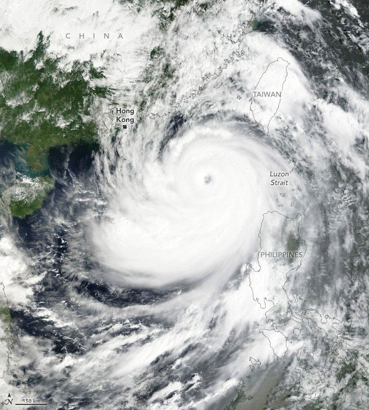

Ragasa Steers Toward China
The 2025 Northwest Pacific typhoon season had been unusually quiet, with real-time estimates of accumulated cyclone energy from Colorado State University showing the basin only half as active as normal as of September 23. Most storms earlier in the year were weak, and only two had reached Category 3 or higher for any sustained period.
That calm ended with Typhoon Ragasa (Nando), which formed on September 18 east of the Philippines. The storm underwent periods of rapid intensification, reaching Category 5 strength with sustained winds exceeding 145 knots (270 km/h or 165 mph) late on September 21, making it the strongest typhoon of 2025.
Ragasa lashed northern Luzon and Taiwan on September 22, producing floods, landslides, and widespread damage to crops and property. Tens of thousands of people were displaced, multiple fatalities were reported, and power outages occurred across affected regions. Authorities in China and Vietnam ordered large-scale evacuations as the storm approached southern Guangdong province and the Gulf of Tonkin.
This MODIS (Moderate Resolution Imaging Spectroradiometer) image on NASA’s Terra satellite, acquired at 01:40 UTC on September 23, 2025, shows Ragasa over the western Pacific. Forecasters predicted it would maintain a west-northwestward trajectory, weakening only slightly due to a “highly favorable environment characterized by strong radial outflow, warm sea surface temperatures, and low vertical wind shear,” according to the Joint Typhoon Warning Center.
The Western Pacific typhoon season spans the entire year, peaking in late August to early September. By September 23, 2025, nineteen named storms had formed, but only Ragasa reached super typhoon intensity, illustrating both the season’s late surge and regional variability.